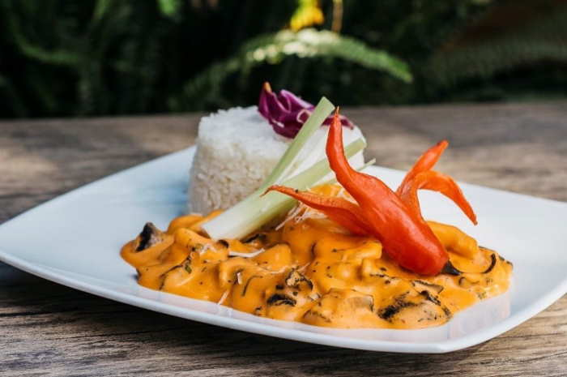

Ají de Mariscos

Preparado sobre la base de aceite vegetal, cebolla, ajíes, queso parmesano, leche evaporada, pan de molde, sal y
pimienta. Cocido y congelado en cubitos
Descongelar, calentar, mezclar con mariscos y servir.
Ingredientes
- Aceite vegetal
- Cebollas
- Ajíes
- Queso parmesano
- Leche evaporada
- Pan de molde
- Sazón
Preparación
- Descongelar el cubo de AYUDA en la COCINA.
- Calentar en una sartén honda a fuego medio, moviendo constantemente.
- En la misma sartén honda, con el cubito de AYUDA descongelado, mezclar con 100g de mariscos
cocidos (30s en agua hirviendo).
- Mantener la mezcla a fuego lento por un minuto y servir. Acompañar con arroz blanco y papa
blanca cocida en rodajas, aceitunas y medio huevo duro.
- Servir para una persona.